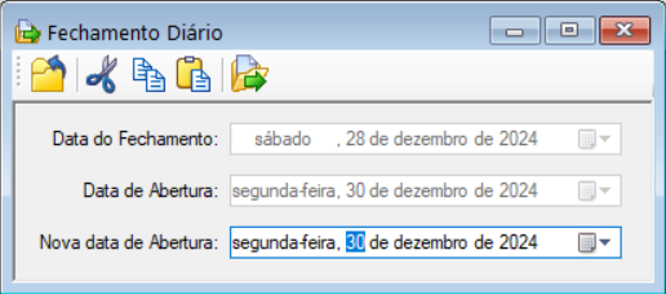

PROCESSO DE FECHAMENTO DIÁRIO
1. FLUXO DE TELAS DO PROCESSO:
- FERRAMENTA FECHAMENTO DIÁRIO
- FERRAMENTA GERAR MOVIMENTAÇÕES
2. FERRAMENTA FECHAMENTO DIÁRIO
Localizar: Opções > Objeto Explorer > Ativo.Log > Ferramentas > Fechamento Diário
O Processo de Fechamento Diário é uma etapa essencial no sistema ERP, garantindo a organização e a consistência dos dados registrados.
{kind=link}

Figura 1
Esse processo atualiza e consolida as seguintes áreas:
2.1. ESTOQUE:
- Realiza o posicionamento cronológico de todas as movimentações de entradas e saídas sejam devidamente registradas e conciliadas com as quantidades reais.
- Garante a precisão nos saldos de estoque para consultas e análises.
2.2. FINANCEIRO:
- Atualiza os registros financeiros, incluindo pagamentos e recebimentos efetuados no dia.
- Alinha os valores financeiros com as movimentações comerciais, oferecendo clareza sobre o fluxo de caixa.
2.3. MOVIMENTAÇÕES DE MERCEDORIAS:
- Registra todas as operações de entradas (compras, devoluções) e saídas (vendas, transferências) de mercadorias.
- Garante que essas movimentações estejam sincronizadas entre o estoque físico e o sistema.
2.4. RESOLUÇÃO DE PENDÊNCIAS:
- Identifica e auxilia na resolução de notas fiscais não autorizadas, garantindo conformidade fiscal.
- Verifica pré-vendas que ainda não foram exportadas para se tornarem pedidos no sistema.
- Monitora processos de vendas e faturamentos pendentes, assegurando que todas as etapas sejam finalizadas.
- Valida o acerto de cargas, garantindo a consistência nas operações logísticas.
2.5. BENEFÍCIOS DO FECHAMENTO DIÁRIO:
- Consolidação precisa das informações do dia.
- Identificação e resolução de pendências operacionais e fiscais.
- Suporte para tomadas de decisão com base em dados confiáveis.
- Redução de erros e retrabalhos, promovendo maior controle e transparência nas operações.
Esse processo deve ser realizado ao final de cada dia de trabalho para garantir que todas as áreas do ERP estejam atualizadas, contribuindo para a eficiência e a excelência operacional.
3. FERRAMENTA GERAR MOVIMENTAÇÕES
Localizar: Opções > Objeto Explorer > Ativo.Log > Ferramentas > Gerar Movimentações
A funcionalidade "Gerar Movimentações" é uma ferramenta essencial para o gerenciamento do estoque no ERP. Ela tem como principal objetivo organizar cronologicamente todas as movimentações realizadas, garantindo a precisão e a consistência dos dados de estoque.

Figura 2
3.1. PRINCIPAIS FUNCIONALIDADES:
3.1.1. ORDENAÇÃO CRONOLÓGICA:
- Posiciona todas as movimentações de entrada e saída de mercadorias com base na data definida, permitindo uma visualização clara e organizada.
3.1.2. ATUALIZAÇÃO DO ESTOQUE:
- Recalcula e ajusta os saldos de estoque com base nas movimentações registradas, garantindo que estejam atualizados para refletir a realidade.
3.1.3. RASTREAMENTO DE OPERAÇÕES:
- Facilita a identificação de movimentações específicas, como compras, vendas, devoluções ou transferências, assegurando que cada operação esteja registrada na ordem correta.
3.1.4. APOIO NA GESTÃO OPERACIONAL:
- Proporciona maior controle e eficiência na gestão de estoques, minimizando inconsistências e reduzindo a necessidade de ajustes manuais.
3.1.5. BENEFÍCIOS:
- Garantia de dados confiáveis para análise e tomada de decisões.
- Redução de erros decorrentes de registros fora de sequência.
- Organização das operações de estoque, promovendo maior clareza e controle.
Essa ferramenta é indispensável para equipes que buscam excelência na gestão de estoques, assegurando que todas as movimentações estejam devidamente registradas e organizadas de forma cronológica.
4. ABRIR DIA PARA AJUSTES DE INFORMAÇÕES
4.1. CUIDADO IMPORTANTE
Não é recomendado abrir muitos dias consecutivos ou esquecer de fechar os dias que permanecem abertos, pois isso pode gerar diversas inconsistências no sistema. Entre os problemas causados estão:
4.1.1. DIVERGÊNCIAS NO ESTOQUE:
- A abertura prolongada pode ocasionar diferenças nas movimentações de entrada e saída, dificultando o controle de produtos.
- Informações incorretas podem levar a erros na reposição, controle de inventário e até prejuízos financeiros.
4.1.2. IMPACTOS EM PROCESSOS FINANCEIROS:
- Transações não encerradas podem gerar atrasos no controle de fluxo de caixa, pagamentos e recebimentos.
- O saldo disponível pode não refletir a realidade, comprometendo o planejamento financeiro.
4.1.3. RESULTADOS INEXATOS NOS RELATÓRIOS:
- Relatórios gerenciais, como de vendas, compras ou movimentações financeiras, terão informações imprecisas, afetando a tomada de decisões estratégicas.
- A análise de dados ficará comprometida, prejudicando a identificação de tendências e oportunidades.
4.1.4. RECOMENDAÇÕES:
- Certifique-se de fechar diariamente os períodos abertos no sistema assim que todas as movimentações forem realizadas.
- Realize verificações regulares para identificar possíveis inconformidades.
- Treine os responsáveis pelo uso do sistema para compreenderem a importância do fechamento diário e seguirem as boas práticas.
Seguir essas orientações é essencial para garantir a integridade dos dados e a confiabilidade dos resultados do sistema.
4.2. EMPRESAS
Localizar: Opções > Objeto Explorer > Ativo.Log > Arquivos > Empresas

Figura 3
No arquivo "Empresas", na guia “Parâmetros”, é possível realizar a abertura e o fechamento manual das movimentações que precisam ser ajustadas em transações de vendas, financeiras e entradas.

Figura 4
4.3. CONFIGURAÇÕES LOG
Localizar: Opções > Objeto Explorer > Ativo.Log > Ferramentas > Configurações Log
Na ferramenta "Configurações Log" , na guia "Estoque" , é possível realizar a abertura e o fechamento manual das movimentações do estoque que precisam ser ajustadas em transações de compras e entradas. Nesta ferramenta, aplica-se a regra D-1 , o que significa que sempre será necessário selecionar um dia anterior aos dados de fechamento indicados no arquivo "Empresas" .

Figura 5
4.4. CONFIGURAÇÕES ADM
Localizar: Opções > Objeto Explorer > Ativo. ADM > Ferramentas > Configurações ADM

Figura 6
Na ferramenta "Configurações ADM" , na guia "Fechamento" , é possível realizar a abertura e o fechamento manual das movimentações financeiras que precisam ser ajustadas em transações como Fluxo de Caixa, Contas a Pagar, Contas a Receber, Caixa e Bancos, entre outras. Essa funcionalidade auxilia no controle de pendências financeiras, proporcionando maior organização, precisão nos registros e facilidade na identificação e resolução de inconsistências. Além disso, contribui para uma melhor gestão do fluxo de caixa, permitindo decisões estratégicas mais informadas e assertivas.
5. FECHAMENTO DIÁRIO (ADM)
Localizar: Opções > Objeto Explorer > Ativo. ADM > Ferramentas > Fechamento Diário ADM

Figura 7
Esse processo atualiza e consolida as seguintes áreas:
5.1. RASTREAMENTO DE MOVIMENTAÇÕES FINANCEIRAS:
- Facilitar a identificação de transações específicas, como pagamentos, coletas, ajustes de fluxo de caixa e conciliações bancárias, garantindo que cada transação seja corretamente registrada.
5.2. APOIO NA GESTÃO FINANCEIRA:
- Proporciona maior controle e eficiência na gestão financeira, minimizando inconsistências e diminuindo a necessidade de intervenções manuais.
5.3. BENEFÍCIOS:
- Garantia de dados confiáveis para análise financeira e tomada de decisões estratégicas.
- Redução de erros decorrentes de registros financeiros fora de sequência ou incompletos.
- Organização e clareza nas operações financeiras, promovendo maior segurança e controle.
Essa ferramenta é indispensável para equipes que buscam excelência na gestão financeira, garantindo que todas as transações sejam validadas, atualizadas e organizadas de forma cronológica, contribuindo para uma gestão mais eficiente e estratégica.
6. VALIDAÇÕES E RESOLUÇÕES
6.1. RETORNO DO PEDIDO DA CARGA XXX NÃO GERADO.
Procedimento: Identificar o pedido e a carga (na janela de pedidos) e verificar a data do acerto (na janela de carga) e gerar as Nfs de Acerto em Opções > Objetos Explorer > Ativo. Log > Ferramentas > Gerar NF’s de Acerto.
6.2. RETORNO DA CARGA XXX NÃO GERADO/PROCESSADO.
Procedimento: Identificar a carga retornada (na janela de carga pela data do acerto) e acessar o Opções > Objetos Explorer > Ativo. WMS > Ferramentas > Gerar Movimento de Retorno/Carga e Processar o Movimento acessando o menu Opções > Objetos Explorer > Ativo. Log > Ferramentas > Processar Movimentos e executar o movimento.
6.3. DEVOLUÇÃO XXX NÃO GERADO/PROCESSADO.
Procedimento: Acessar o menu Opções > Objetos Explorer > Ativo. WMS > Ferramentas > Gerar Movimento de Devolução, executar o movimento e Opções > Objetos Explorer > Ativo. Log > Ferramentas > Processar o Movimentos, executar.
6.4. VALOR DO CONTAS A RECEBER DIFERENTE DO PEDIDO.
OBS: Essa situação só ocorre caso é feita a baixa do título antes do fechamento diário, ou seja, quando há atraso no fechamento diário.
Deve-se entrar em contato com o suporte para verificar o melhor procedimento.
6.5. DATA DE ACEITE DO CONTA A RECEBER DIFERENTE DO ACERTO DA CARGA
Procedimento: Gerar as NF’s de acerto, acesse o menu Opções > Objetos Explorer > Ativo. Log > Ferramentas > Gerar/Nfs de Acerto.
OBS: Ao realizar uma venda a prazo e que ele esteja configurado para envio de remessa, no caso de boleto, o sistema exige que esses pedidos tenham a data do aceite.
6.6. CONTAS A RECEBER INVÁLIDO PARA A OPERAÇÃO DO PEDIDO
Procedimento: Quando a operação do pedido é a prazo e em outro momento é redefinido a operação para à vista ou que não exige prazo.
6.7. CONTAS A RECEBER NÃO LOCALIZADO PARA O PEDIDO.
Procedimento: Acessar o menu Opções > Objetos Explorer > Ativo. Log > Ferramentas > Gerar/NFs de acerto ou Acessar a janela de pedidos e imprimir o (s) mesmo (s).
OBS: Ao imprimir os pedidos (na janela de pedidos ou pela carga, no menu Relatórios/Notas Fiscais por/Carga) o sistema gera o Contas a receber dos pedidos.
6.8. TIPO DE DOCUMENTO A RECEBER DIFERENTE DA OPERAÇÃO DO PEDIDO.
OBS: Houve a troca manual do tipo de documento na janela de contas a receber, sendo que o procedimento correto é redefinir a operação do pedido localizado no Opções > Objetos Explorer > Ativo. Log > Ferramentas > Redefinir/Operação/Pedido ou na opção(Menu de contexto) Condições(Tela Pedidos).
- Caso o fechamento já tenha ocorrido esta inconsistência não será visualizada no fechamento.
6.9. CARGA XXX NÃO LIBERADA.
Procedimento: Liberar a Carga acessando a janela de cargas, selecionando e clicando com o botão direito do mouse e no menu de contexto, selecione a opção LIBERAR, informe a data de saída e clique no botão EXECUTAR.
6.10. SAÍDA DA CARGA XXX NÃO GERADA.
Procedimento: Acessar o menu Opções > Objetos Explorer > Ativo. Log > Ferramentas > Gerar Movimentos de Saída/Cargas e Opções > Objetos Explorer > Ativo. Log > Ferramentas > Processar movimentos. Esses procedimentos baixam do estoque os itens da carga, igualando a quantidade do estoque disponível.
6.11. CARGA XXX NÃO ACERTADA.
Procedimento: Realizar o procedimento de acerto, que só é possível ao realizar os procedimentos da inconsistência de número 6.10.
6.12. ENTRADA NÃO GERADA/PROCESSADA.
Procedimento: Acessar o menu Opções > Objetos Explorer > Ativo. Log > Ferramentas > Monitor de Entradas e processa o movimento, em seguida acessando o menu Opções > Objetos Explorer > Ativo. Log > Ferramentas > Processar Movimentos e executa.
6.13. MOVIMENTAÇÃO DE ESTOQUE NÃO GERADA.
Procedimento: Esse deve ser o último procedimento a ser realizado. Acesse o Opções > Objetos Explorer > Ativo. Log > Ferramentas > Gerar Movimentações e confirme a geração.
OBS: Este procedimento armazena as movimentações de cada produto (Entrada, Saída, Retorno e Devolução) pelo custo médio (Calculado pelos valores digitados na entrada da NF) possibilitando rastrear se necessário, o ocorrido com o produto através dos Relatórios Movimentação de Produtos por data e Relatórios Fiscais do estoque.
6.14. PRODUTO XXX PREÇO NÃO DEFINIDO.
Confirmar se o cliente tem uma tabela de preço no Arquivo Clientes – Preços/Operações – Guia Equipes.
Procedimento: Acessar o Arquivo Produtos > Menu de contexto Opção Precificação e confirmar, em seguida executar a Ferramenta Redefinir Preços.